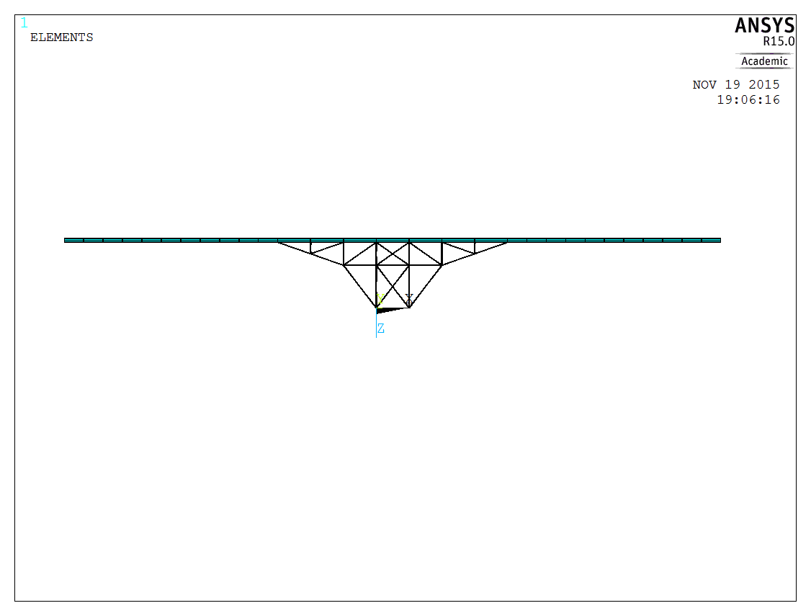
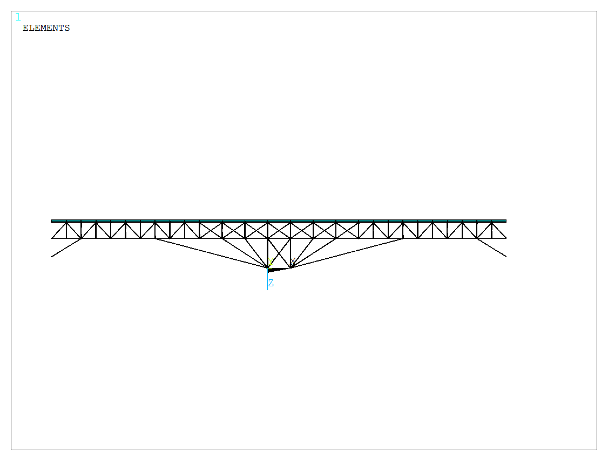
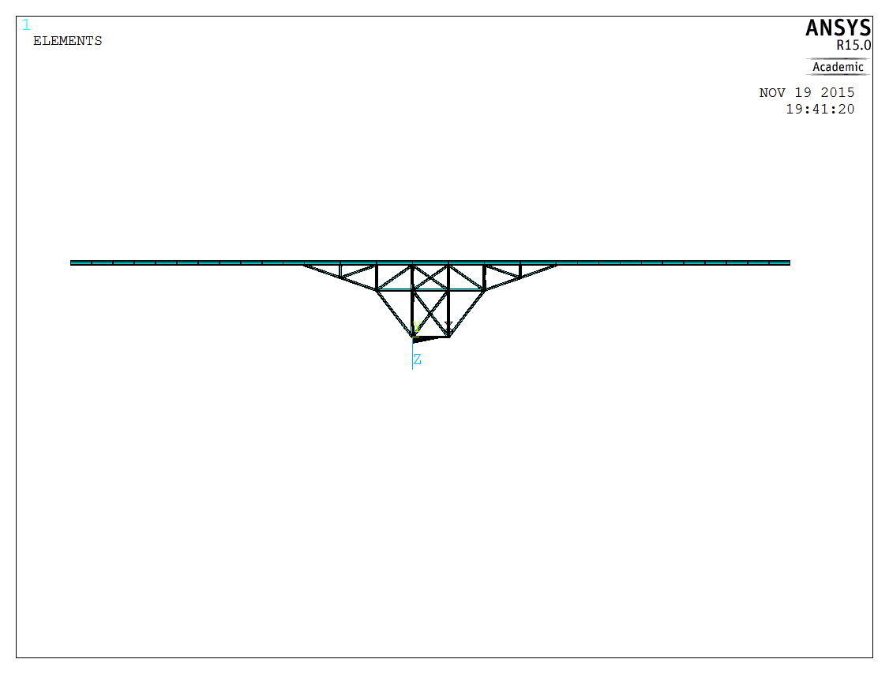

Finite Element Method is a powerful technique that can solve complex mechanical and structural systems. Many engineering software utilize this technique to predict how a product reacts when exposed to real world reactions. It is used to predict whether a product will break/wear out/work the way it was designed. What is the Finite Element Method? Click Here to learn more.
This study required the team to contruct a working model of the design seen above using ANSYS. The model would then be subject to a structural analysis to determine whether the design is safe.
The maximum deflection was found to be 4.73 inches which is very significant for a bridge, as well as the maximum stress being 75 kpsi. This is well above the allowable stress constraint of steel which is 25 kpsi. This design was agreed upon as unsafe, which then required the team to re-design the model.
Design Strategy 1 was the result of the team either adding new members or subtracting existing members. This design consists of a network of cross beams throughout the length of the roadbed. This ensures that the roadbed will be structurally stable when sustaining heavy loads, reducing the amount of deflection that occurs.
This design reduced the maximum stress to 24.26 kpsi, just under the allowable stress of 25 kpsi. The maximum deflection had also been reduced to just 0.716 inches, a significant decrease from the original model.
The only flaw in this design is the amount of material present. This design will be quite expensive, therefore the team set out for a second design strategy.
Design Strategy 2 was the result of simply increasing the cross sectional area of the rigid frame from 3.6 in2 to 6 in2. No other alterations were made from the original design.
This design managed to reduce the maximum stress to 24.8 kpsi, just below the maximum allowable stress. Deflection is reduced to 2.79 inches, a 170% decrease from the original deflection.
This design is a more viable option than the previous re-design. Both satisfied the project constraints, however Design Strategy 2 is a more affordable option.
